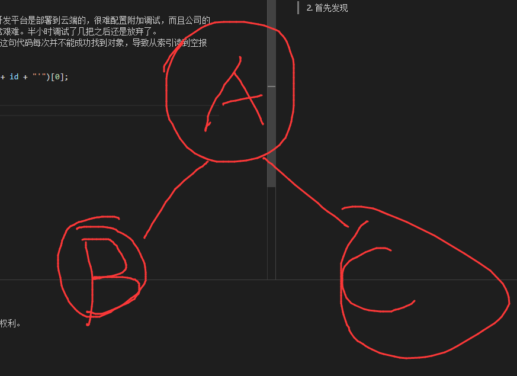

悲惨遭遇总结
前因
公司开发时产生的一个简单的需求：
将一张表的数据拷贝到另一张结构相同的表中。
需求非常简单，只要远远本本把数据拷贝到另一张表中，并且New一个GUID就好了，
值得注意的是：原先表是一个静态树表，即节点之间可能存在父子关系，用ID和ParentID表示。
思考
- 首先这个代码公司是已经写好的，并且这也不算是个多难的算法，公司是通过复制一份表，首先在前一张表中生成ID对应的新的GUID，然后对照着第一张表，把第二张表改成目标数据表。
思路非常清晰，这样编写很容易并且出问题的概率很小。 - 但是个人就是比较作死,觉得在树（以前写算法天天碰到的数据结构）这里最起码得搞点递归，省内存，而且适当剪枝（树估计也没什么要剪的(￣▽￣)"）可以提高速度。就这样，周五晚上加了20分钟班搞定代码。
开始秃头调试
可是当调试的时候简直想死。由于公司的开发平台是部署到云端的，很难配置附加调试，而且公司的测试数据十分冗长，因此每次部署调试非常艰难。半小时调试了几把之后还是放弃了。
- 总会报错：索引超出范围。发现是因为这句代码每次并不能成功找到对象，导致从索引读到空报错。
1 | DataRow row = dt.Select("NewID='" + id + "'")[0]; |
- 首先发现从B上去把A的ID变掉，同时通过递归返回更新给B，但是却没有给更新呢给C，这导致之后C无法通过原来的ParentID找到A。因此我给每条记录加了一个原有ID的列保存原有ID。
 - 改完之后，以为已经干掉了所有的问题，可还是太天真。依旧同样的报错。
后来发现我每次对已经被递归过的节点是不回再递归他的，比如上面从B到A，A被递归过，并标Flag为1（原来是0），C去递归A时只需查看FLAG。然而，我却愚蠢的在查看Flag之前，又一次把本该不变直接返回的ID重新生成了一次GUID。(￣▽￣)" - 周末团建回来在公司改完这个问题后，我想可以了吧，老子加班在搞你！！！！！！结果/_ \，依旧是同样的报错！！！！！！！
我放下了手中准备粉碎的鼠标。背上包去健身，玛德，cao！！！！
周末晚上回来，放下焦躁的情绪。吃个小糖，洗个衣服，补个蛋白质。。。。。。
这一次，我先再次把总共不到40行的算法看了一遍，然后自己写了一个终端简易调试程序，用自己的阿里云MySQL建立一个简单的静态树表。仅仅录5条数据。这一次，问题便赤裸裸的暴露在愚蠢的我和强大的VS面前。通过简单的断点调试配合输出，我终于发现了问题。我的递归逻辑还是存在问题，这个问题是因为3中的解决方法欠妥导致这个问题。因为，解决三的时候我每次是通过原先的ID查找的，这就导致通过新ParentID无法找到以前的节点。
吃屎的感悟
- 很多算法想法简单，但是实现起来并不是那么手到擒来的，有很多地方要去琢磨，在编码前一定先想好。
- 吃到屎了不要急躁，可以做其他的事缓解一下。不是还有生活嘛